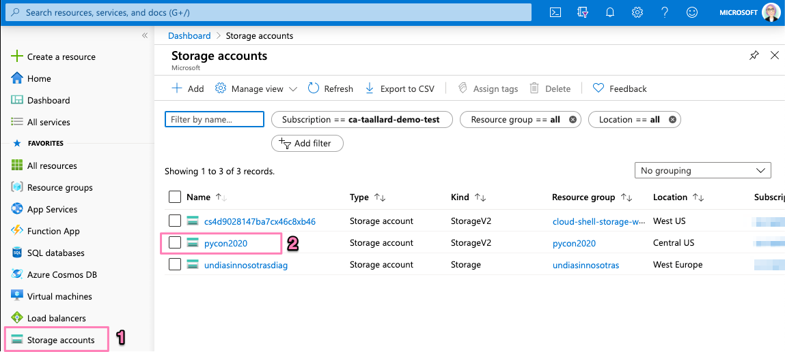

Adding Blob storage bindings¶
Adding Blob storage bindings¶
You should now have a working function that collects data from the StackExchange API.
In this section, we will:
Complete the function to store the data in AzureBlob storage
Create a second function that identifies the addition of a file to Azure Blob storage and triggers a second function
Create a database to store our cleaned data and modify the function to store the database
 Triggers and bindings¶
Triggers and bindings¶
Triggers: these cause a function to run. They can be an HTTP request, a queue message or an event grid. Each function must have one trigger.
Binding: is a connection between a function and another resource or function. They can be input bindings, output bindings or both. These are optional, and a function can have one or more bindings.
1. Create Azure Blob Storage¶
We already created a Storage Account in the Deploy your first function section. The next step is to create a Blob Storage container so we can start saving the data collected through your function.
Head over to portal.azure.com and click on Storage accounts on the left sidebar and then on your function storage account.
Click on either of the Containers section (see image).

Click on + Container at the top of the bar and provide a name for your Blob container.
Without leaving your dashboard, click on Access keys on the sidebar menu and copy the Connection string.

2. Attach Blob binding¶
Now that you created the Blob container, you need to add the binding to your function.
Back in VS Code click on the Azure extension on the sidebar and then right-click on your function name > Add binding.
Since we want to store the outputs in the container, we need to select the OUT direction followed by Azure Blob Storage.
Assign a name for the binding a path for the blob:
functionblob/{DateTime}.csv
Notice that I am using the name of the container I created before and the binding expression
DateTimewhich resolves toDateTime.UtcNow. The following blob path in afunction.jsonfile creates a blob with a name like2020-04-16T17-59-55Z.txt.Select AzureWebJobsStorage for your local settings.
Once completed, your function.json file should look like this:
function.json¶{ "scriptFile": "main_function.py", "bindings": [ { "name": "mytimer", "type": "timerTrigger", "direction": "in", "schedule": "0 0 9 * * *" }, { "type": "blob", "direction": "out", "name": "outputBlob", "path": "functionblob/{DateTime}.csv", "connection": "AzureWebJobsStorage" } ] }
Add the Storage access key that you copied before to your
local.settings.json. If you added your storage account through the Azure functions extensions, this should already be populated.local.settings.json¶{ "IsEncrypted": false, "Values": { "AzureWebJobsStorage": <Your key>, "FUNCTIONS_WORKER_RUNTIME": "python", "AzureWebJobs.timer-function.Disabled": "false" } }
3. Update your function¶
We now need to update the function so that:
Save the collected API items in a CSV file
Store the file in the Blob container
Updating the main_function.py file:
main_function.py¶import csv import datetime import logging from typing import Iterator, Optional import azure.functions as func from dotenv import find_dotenv, load_dotenv from .utils import stack # -------------------------- # Helper methods # -------------------------- def get_vars() -> Optional[bool]: """Collect the needed keys to call the APIs and access storage accounts. Returns: bool: Optional - if dotenv file is present then this is loaded, else the vars are used directly from the system env """ try: dotenv_path = find_dotenv(".env") logging.info("Dotenv located, loading vars from local instance") return load_dotenv(dotenv_path) except: logging.info("Loading directly from system") def write_file(se_iterator): cols = [ "question_id", "title", "is_answered", "link", "owner_reputation", "score", "tags", ] try: with open("out.csv", "w", newline="") as f: writer = csv.DictWriter(f, fieldnames=cols) writer.writeheader() for question in se_iterator: writer.writerow(question) except IOError: logging.error("Cannot write, IOError") # ----------------------------------------- # Main method - executed by the function # ----------------------------------------- def main( mytimer: func.TimerRequest, outputBlob: func.Out[bytes], context: func.Context ) -> None: """Main function to collect questions from stackexchange. Note that right now the site is harcoded to "StackOverflow" but this can be changed in stack.py Args: mytimer (func.TimerRequest): Timer trigger for the function, for more details check function.json """ # collect timestamp for the function that is being called utc_timestamp = ( datetime.datetime.utcnow().replace(tzinfo=datetime.timezone.utc).isoformat() ) logging.info(f"Function executing at {utc_timestamp}") get_vars() # as many search terms as wanted - must be a list stackexchange = stack.se_object(["python"]) se_questions = stackexchange.run_query(n=200) write_file(se_questions) # stores in the Blob container with open("out.csv", "r") as f: outputBlob.set(f.read()) f.close() if __name__ == "__main__": # set logging format - personal preference log_fmt = "%(asctime)s - %(name)s - %(levelname)s - %(message)s" logging.basicConfig(level=logging.INFO, format=log_fmt) # call main function main()
Notice these lines in the above code:
def main(
mytimer: func.TimerRequest,
outputBlob: func.Out[bytes],
context: func.Context
) -> None:
The outputBlob: func.Out[bytes] specifies the binding we just created and context: func.Context allows the function to get the context from the host.json file.
And also the script to access the StackExchange API:
utils/stack.py¶import datetime import json import logging import os from dataclasses import dataclass from json import JSONDecodeError from typing import Iterator, Optional import requests @dataclass class se_object: """Class to deal with StackExchage data collection and manipulation. """ search_terms: list query_type: str = "and" main_uri: str = "https://api.stackexchange.com/2.2/questions" def __repr__(self) -> str: return f"<Object for site {self.main_uri}>" def create_payload(self, search_terms, n) -> dict: """Construct the payload based on the verification step before Returns: payload [dict]: payload to be sent over to the API """ # note that this needs to be in epoch time_now = datetime.datetime.now(datetime.timezone.utc) start_time = time_now - datetime.timedelta(hours=24) payload = { "fromdate": int(start_time.timestamp()), "todate": int(time_now.timestamp()), "site": "stackoverflow", "sort": "votes", "order": "desc", "tagged": search_terms, "client_id": os.environ.get("SE_client_id"), "client_secret": os.environ.get("SE_client_secret"), "key": os.environ.get("SE_key", None), "pagesize": n, } return payload def call_API(self, payload) -> Optional[Iterator[dict]]: resp = requests.get(self.main_uri, payload) if resp.status_code == 200: try: new_questions = self.extract_items(resp) logging.info(f"🐍 Collected new questions for the search term") return new_questions except (JSONDecodeError, KeyError) as e: logging.error(f"{e.__class__.__name__}: {e}") else: error = resp.json()["error_message"] logging.error( f"(Unable to connect to Stack Exchage: status code {resp.status_code} - {error}" ) def run_query(self, n=100) -> Optional[Iterator[dict]]: """Validate the query, then construct the payload and call the API Args: n (int, optional): Number of questions to collect from the last 24 hours. Defaults to 100. Returns: Optional[Iterator[dict]]: results of the API call. """ if os.environ.get("SE_key", None) is None: logging.info("No StackExchange API key provided, limited use may apply") if len(self.search_terms) == 1: payload = self.create_payload(self.search_terms, n) new_questions = self.call_API(payload) return new_questions elif (len(self.search_terms) > 1) and (self.query_type == "and"): search_items = ";".join(self.search_terms) payload = self.create_payload(search_items, n) new_questions = self.call_API(payload) return new_questions elif (len(self.search_terms) > 1) and (self.query_type == "or"): search_items = self.search_terms for term in search_items: payload = self.create_payload(term, n) new_questions = self.call_API(payload) return new_questions else: logging.error("Only search supported are: 'and' 'or' types.") def extract_items(self, response) -> Iterator[dict]: """Method used to extract the response items. This returns a generator for simplicity. Args: response (HTTPResponse): Response from the API call Returns: Iterator[dict]: Generator- dictionary with the response items Yields: Iterator[dict]: Generator- dictionary with the response items """ for question in response.json().get("items", []): # logging.info(f"{question.get('tags')}") yield { "question_id": question["question_id"], "title": question["title"], "is_answered": question["is_answered"], "link": question["link"], "owner_reputation": question["owner"].get("reputation", 0), "score": question["score"], "tags": question["tags"], }
If you want, you can follow the steps in section 4. Debugging and executing locally to run and debug your function locally.
Otherwise, you can deploy and execute your function as we did in section 5. Deploying your updated function (except for the variables setting section as your storage details should be there already).
Tip
When deploying your function, you can click on the pop-up window output window link to track the deployment status/progress.

After running your function you can head over to Storage accounts > <your account> > Containers and click on your function Blob container.
If all runs smoothly, you should be able to see the created file.

 Additional resources and docs
Additional resources and docs